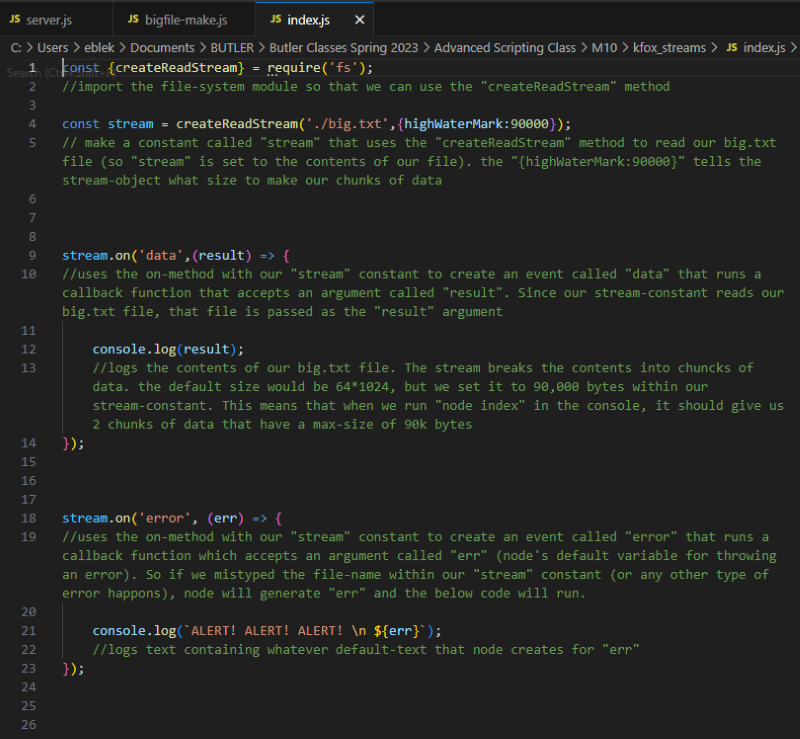

Streams Exercise
Streams are a way to read and write files, handle network communications, and manipulate information exchanges in an efficient way. Streams read data in chunks rather than all at once. This makes them more efficient with both memory and time. Rather than trying to load a super large file all at once and then waiting for it to be loaded before using it can create lag. If you load that large file a bit at a time, you can start using parts of it as it loads. By default, these chunks are 64*1024 bytes. It's also possible to change the size of the chunks.
There is a useful method called stream.pipe() and its main purpose is to provide output of one stream as the input for another. So if we have a document named bigfile.txt it will let us read the file then write it to another output. This is exactly what we did in our exercise.
First we made a script called bigfile-make.js that creates a large file called big.txt (a simple text file full of several lines of text).
Next, we made a script called index.js that streams big.txt and chunks it into pieces.
Then we made a script called server.js to create a local server and pipe big.txt to the browser.
Then we can run all 3 scripts in the console, as seen below. Note that after running index.js, our data is split into 2 chunks under 90k bytes each.
We can also view the new big.txt file to confirm it has been created and populated with text.
Finally, we can visit localhost:8080 in a browser, and use "inspect" as described in our server.js script.